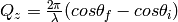

ConvertToReflectometryQ dialog.
Table of Contents
| Name | Direction | Type | Default | Description |
|---|---|---|---|---|
| InputWorkspace | Input | MatrixWorkspace | Mandatory | An input workspace in wavelength |
| OutputDimensions | Input | string | Q (lab frame) | What will be the dimensions of the output workspace? Q (lab frame): Wave-vector change of the lattice in the lab frame. P (lab frame): Momentum in the sample frame. K initial and final vectors in the z plane. |
| OverrideIncidentTheta | Input | boolean | False | Use the provided incident theta value. |
| IncidentTheta | Input | number | -1 | An input incident theta value specified in degrees.Optional input value for the incident theta specified in degrees. |
| Extents | Input | dbl list | -50,50,-50,50 | A comma separated list of min, max for each dimension. Takes four values in the form dim_0_min, dim_0_max, dim_1_min, dim_1_max, specifying the extents of each dimension. Optional, default +-50 in each dimension. |
| OutputAsMDWorkspace | Input | boolean | True | Generate the output as a MDWorkspace, otherwise a Workspace2D is returned. |
| OutputWorkspace | Output | IMDWorkspace | Mandatory | Output 2D Workspace. |
| NumberBinsQx | Input | number | 100 | The number of bins along the qx axis. Optional and only applies to 2D workspaces. Defaults to 100. |
| NumberBinsQz | Input | number | 100 | The number of bins along the qx axis. Optional and only applies to 2D workspaces. Defaults to 100. |
| SplitInto | Input | int list | 2,2 | A comma separated list of into how many sub-grid elements each dimension should split; or just one to split into the same number for all dimensions. Default 2,2. |
| SplitThreshold | Input | number | 50 | How many events in a box before it should be split. Default 50. |
| MaxRecursionDepth | Input | number | 10 | How many levels of box splitting recursion are allowed. The smallest box will have each side length  Default 10. Default 10. |
The workspace spectrum axis should be converted to signed_theta using ConvertSpectrumAxis v2 and the x axis should be converted to Wavelength using ConvertUnits v1 before running this algorithm. Histogram input workspaces are expected.
The algorithm will looks for a specific log value called stheta, which
contains the incident theta angle  . If the input
workspace does not contain this value, or if you wish to override this
value you can do so by providing your own IncidentTheta property and
enabling OverrideIncidentTheta.
. If the input
workspace does not contain this value, or if you wish to override this
value you can do so by providing your own IncidentTheta property and
enabling OverrideIncidentTheta.
Output workspaces are always 2D MD Histogram workspaces, but the algorithm will perform one of three possible transformations.
 ,
, 
 ,
, 
 ,
,  . Note that P and K are
interchangeable.
. Note that P and K are
interchangeable.where




You will usually want to rebin using BinMD v1 or SliceMD v1 after transformation because the output workspaces are not regularly binned.
Categories: Algorithms | Reflectometry
{kind=link}